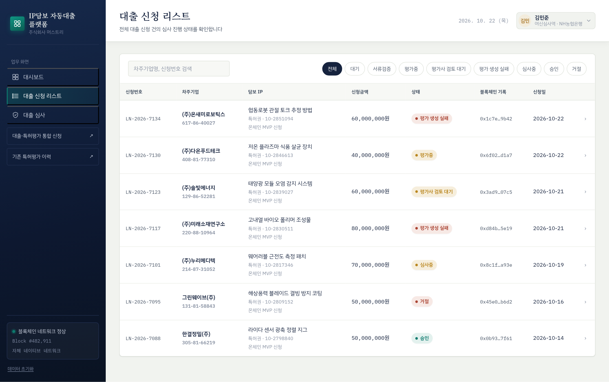
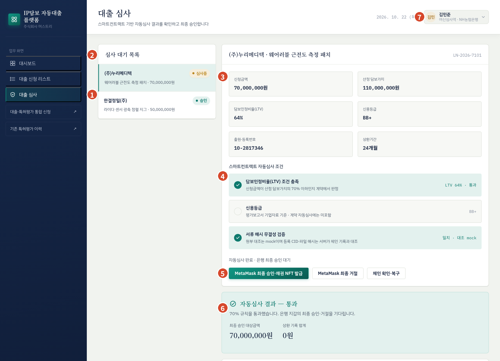
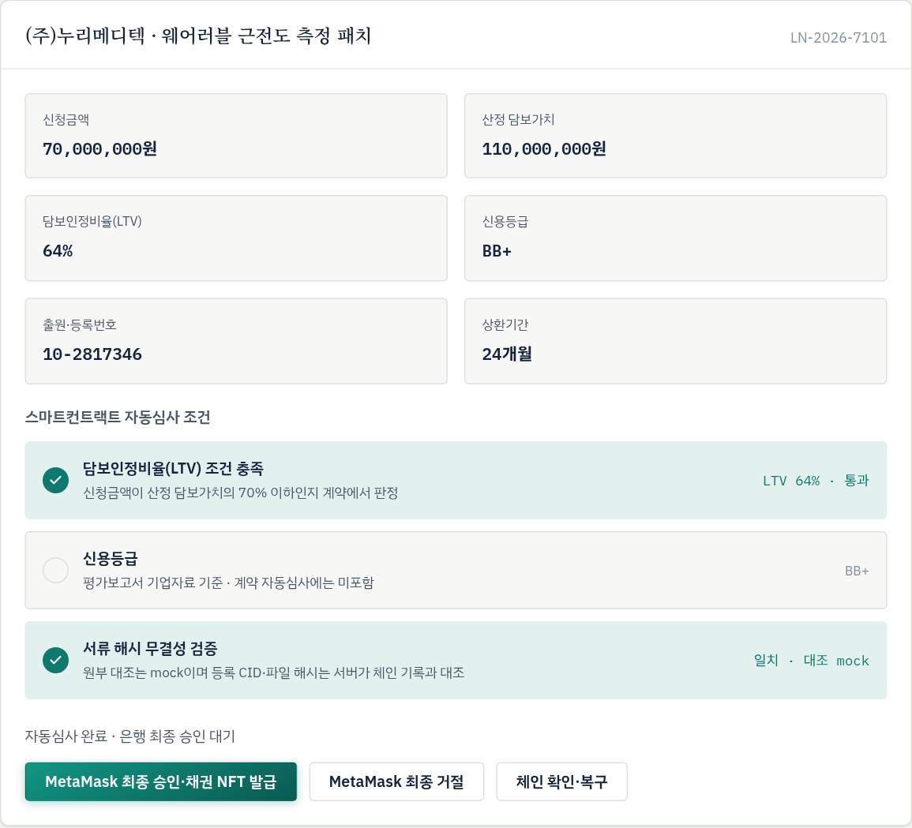
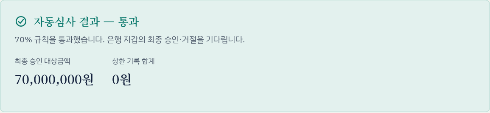
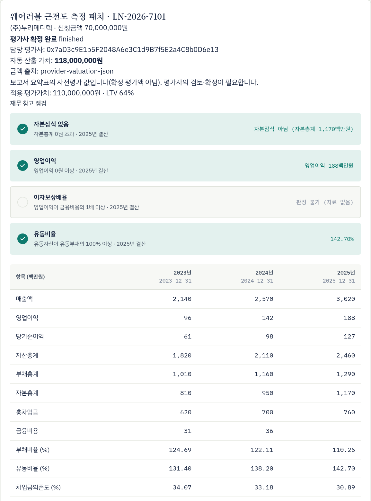
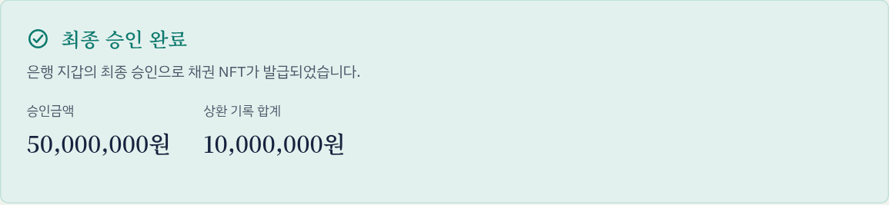
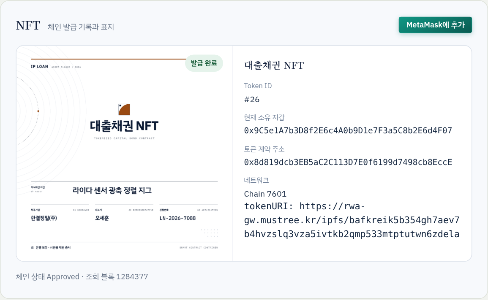
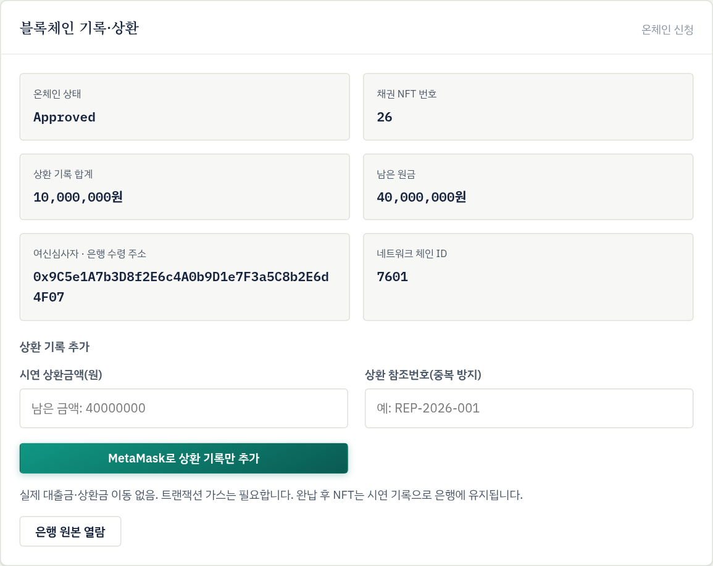

평가사가 확정하고 스마트컨트랙트 자동심사를 통과한 신청을 검토해 최종 승인 또는 거절을 결정하고, 승인 건의 상환 내역을 기록하는 절차를 설명한다.
여신담당자는 자동심사(LTV 70% 이하)를 통과한 신청의 여신 여부를 판단한다. 시스템이 자동으로 판정하는 것은 LTV 기준뿐이므로, 신용·재무·권리관계 판단과 대출 조건 결정은 은행 여신 규정에 따라 여신담당자가 한다.
| 업무 | 가능 시점 | 조건 |
|---|---|---|
| 심사 정보·평가보고서 열람 | 자동심사 통과(Eligible) 이후 | 웹 화면 열람. 보고서·근거자료는 별도 서명 없이 열린다 |
| 최종 승인 또는 거절 | Eligible 상태에서 1회 | 신청에 배정된 은행 지갑, BANK_ROLE 보유 |
| 상환 기록 | 승인(Approved) 이후 완납 전 | 배정된 은행 지갑 |
| 원본 특허 PDF 열람 | 승인·완납(Approved·Repaid) 이후 | 배정된 은행 지갑의 서명, 채권 NFT 보유 |
| 채권 NFT 지갑 추가 | 승인 이후 | 배정된 은행 지갑 |
역할을 여신심사역 · NH농협은행으로 선택하면 왼쪽 메뉴에 대시보드, 대출 신청 리스트, 대출 심사가 표시된다.
| 메뉴 | 용도 |
|---|---|
| 대시보드 | 전체 신청의 상태별 건수와 최근 신청 건 |
| 대출 신청 리스트 | 전체 신청 목록. 차주기업명·신청번호 검색, 상태별 필터. 행을 누르면 대출 심사 화면에서 그 건이 열린다 |
| 대출 심사 | 심사 대기 목록과 심사 화면. 최종 승인·거절, 상환 기록, 원본 열람을 이 화면에서 처리한다 |


심사 화면 아래쪽에는 블록체인 기록·상환(온체인 상태, 채권 NFT 번호, 상환 합계, 배정 은행 주소), 평가 확정 정보와 재무 참고 점검, 승인 후의 채권 NFT 카드가 이어진다.
| 단계 | 화면 위치 | 주요 확인 사항 | 참조 |
|---|---|---|---|
| ① | 대출 심사 › 심사 대기 목록 | '심사중' 건, 배정 은행 주소가 본인 지갑인지 | 2.4 |
| ② | 심사 요약, 자동심사 조건 | 신청금액·산정 담보가치·LTV, 서류 해시 무결성 '일치' | 2.5 |
| ③ | 평가 확정 정보, 재무 참고 점검 | 자동 산출 가치와 적용 가치, 평가사 검토 사유, 재무 4개 항목, 보고서·근거자료 | 2.6 |
| ④ | 은행 내부 시스템 | 사업자 상태, 특허 권리관계, 신용, 대출 조건, 내부 승인 | 2.7 |
| ⑤ | 결정 버튼, MetaMask | 결정은 되돌릴 수 없음. 거절 사유는 은행 내부에 기록 | 2.8 |
| ⑥ | 채권 NFT 카드, 은행 원본 열람 | NFT 발급·소유 지갑, 원본 PDF | 2.9 |
| ⑦ | 블록체인 기록·상환 › 상환 기록 추가 | 은행 수납 확인 후 금액·고유 참조번호 기록 | 2.10 |
LTV 기준을 넘어 자동 거절된 건은 은행 심사 목록에 나타나지 않는다. 평가 중인 건의 진행 상태는 대출 신청 리스트에서 확인한다.

| 항목 | 설명 |
|---|---|
| 신청금액 | 차주가 신청한 금액. 승인하면 이 금액이 그대로 승인금액으로 기록된다. 시스템에는 금액 조정 기능이 없다. |
| 산정 담보가치 | 평가사가 확정해 블록체인에 기록한 적용 평가가치 |
| 담보인정비율(LTV) | 신청금액 ÷ 산정 담보가치 × 100. 화면에는 정수로 반올림해 표시한다. |
| 신용등급 | 평가보고서에 첨부된 기업자료(TCB 등)의 신용등급. 자료가 없으면 '판정 불가 (자료 없음)' |
| 출원·등록번호 | 차주가 입력한 특허 번호 |
| 상환기간 | 차주가 고른 상환 희망 기간(12·24·36개월) |
| 조건 | 판정 방식 | 화면 표시 | 여신담당자 조치 |
|---|---|---|---|
| 담보인정비율(LTV) 조건 충족 | 스마트컨트랙트가 신청금액 × 100 ≤ 적용 평가가치 × 70을 정수로 판정한다. 정확히 70%도 통과한다. | LTV n% · 통과 / 거절 | 통과한 건만 은행 심사 대상이 된다. 판정 결과는 바꿀 수 없다. |
| 신용등급 | 계약 판정에 들어가지 않는 참고 정보 | 등급 또는 판정 불가 | 은행 신용평가 기준으로 따로 판단한다(2.7절). |
| 서류 해시 무결성 검증 | 서버가 등록 파일의 해시·CID를 블록체인 기록과 대조한다. | 일치 / 불일치 | '불일치'면 승인하지 말고 운영사에 보고한다(4.4절 D3). |


| 항목 | 설명 |
|---|---|
| 평가사 확정 완료 | 평가사가 보고서를 검토하고 블록체인에 확정했다는 표시 |
| 담당 평가사 | 확정한 평가사의 지갑 주소 |
| 자동 산출 가치 | LLM 보고서가 산출한 금액. '사전평가 값입니다(확정 평가액 아님)' 안내가 있으면 평가사 검토 전 초안이다. |
| 적용 평가가치 · LTV | 평가사가 확정한 금액과 그 금액 기준 LTV |
| 평가사 검토 결과 | 평가사가 입력한 검토 내용과 가치 적용 사유. 자동 산출 가치와 적용 가치가 다르면 그 이유가 적혀 있어야 한다. |
| 평가 작업번호 · 여신심사 번호 | 보고서 생성 작업번호와 심사 건 번호. 운영사·평가기관에 문의할 때 쓴다. |
보고서에 담긴 최근 3개 결산연도 재무자료 중 가장 최근 연도를 기준으로 네 가지를 점검한다.
| 점검 항목 | 기준 |
|---|---|
| 자본잠식 없음 | 자본총계 0원 초과 |
| 영업이익 | 영업이익 0원 이상 |
| 이자보상배율 | 영업이익이 금융비용의 1배 이상. 금융비용이 0원이면 충족 |
| 유동비율 | 유동자산이 유동부채의 100% 이상 |
| 버튼 | 내용과 활용 |
|---|---|
| PDF · HTML 보고서·근거 확인 | 평가보고서 본문 |
| QUALITY 보고서·근거 확인 | 근거 확보 상태, 적용한 가정, 검증 항목. 확인되지 않은 매출·적용률 같은 가정이 들어 있는지 여기서 본다. |
| TRACE 보고서·근거 확인 | 보고서 내용별 근거 추적 자료 |
| TIMING · LOG | 단계별 생성 소요시간과 진행 로그. 오류 문의 때 쓴다. |
| 평가 접수·재시도 이력 | 보고서 생성을 다시 시도한 경우 차수별 작업번호와 결과 |
최종 승인 전에 아래 항목을 은행 여신 규정에 따라 확인하고, 검토 결과는 은행 내부 시스템에 기록한다. '시스템 제공' 열은 플랫폼 화면에서 확인할 수 있는 범위를 뜻한다.
| No | 확인 항목 | 확인 방법 | 시스템 제공 | 확인 |
|---|---|---|---|---|
| 1 | 차주 실재성·사업자 상태 | 사업자등록번호로 휴·폐업 여부 조회 | 사업자번호 표시 | |
| 2 | 특허권 권리관계 | 특허청 등록원부에서 현재 권리자, 존속 여부, 연차료 납부, 질권·전용실시권 설정 여부 확인 | 출원·등록번호만 표시. 제출 공고전문은 현재 권리관계를 증명하지 않음 | |
| 3 | 평가 적정성 | 자동 산출 가치와 적용 가치의 차이, 평가사 검토 사유, QUALITY 자료의 미확인 가정 | 제공 | |
| 4 | 신용등급 | 보고서 등급 확인. '판정 불가'면 은행 신용평가 조회 | 일부 제공 | |
| 5 | 재무 상태 | 재무 참고 점검 4개 항목과 3개년 재무표. 판정 불가 항목 보완 | 일부 제공 | |
| 6 | 서류 무결성 | 서류 해시 무결성 검증 '일치' | 제공 | |
| 7 | 대출 조건 | 신청금액·상환기간이 은행 기준에 맞는지 확인. 감액이 필요하면 거절 후 차주가 조정된 금액으로 다시 신청 | 신청금액 그대로 승인 (조정 불가) | |
| 8 | 은행 내부 요건 | 전결 권한, 내부 승인 등 여신 규정상 기타 요건 | — |


승인하면 배정된 은행 지갑에 대출채권 NFT가 발급된다. 카드에는 Token ID, 현재 소유 지갑, 토큰 계약 주소, 네트워크가 표시된다.

상환금 수납은 은행 시스템에서 처리하고, 수납이 확인된 내역만 플랫폼에 기록한다.
| 구분 | 규칙 |
|---|---|
| 금액 | 남은 원금 이하의 양의 정수(원). 남은 원금을 넘는 금액은 기록되지 않는다. |
| 참조번호 | 같은 신청에서 이미 쓴 참조번호는 거부된다(이미 기록된 상환 참조번호입니다.). |
| 기록 범위 | 원금만 기록한다. 이자·연체는 기록하지 않는다. |
| 정정 | 기록한 상환은 취소·수정할 수 없다. 입력 전에 금액을 다시 확인한다(오기록 시 4.4절 E3). |
| 완납 후 | 채권 NFT는 은행 지갑에 그대로 남는다. |
| 질문 | 답변 |
|---|---|
| 심사 대기 목록에 신청 건이 보이지 않는다. | 평가사가 아직 확정하지 않았거나, LTV 기준을 넘어 자동 거절된 건이다. 대출 신청 리스트에서 상태를 확인한다. |
| 승인 버튼이 눌리지 않는다. | 자동심사 통과(Eligible) 상태에서만 활성화된다. 이미 처리된 건이면 비활성 상태다. |
| 이 신청에 배정된 은행 지갑으로 전환하세요.가 뜬다. | MetaMask에서 배정된 지갑을 선택한다. 배정 주소는 블록체인 기록·상환 영역에서 확인한다. |
| 연결한 지갑에 BANK_ROLE 권한이 없습니다.가 뜬다. | 운영사에 권한 등록 여부를 확인한다. |
| 신청금액을 줄여서 승인할 수 있나? | 없다. 거절한 뒤 차주가 조정된 금액으로 다시 신청한다. |
| 평가 금액에 이견이 있어 재평가를 받고 싶다. | 확정된 평가는 다시 열 수 없다. 3.7절 이견 조정 절차를 따른다. |
| 승인 전에 원본 PDF를 보고 싶다. | 은행의 원본 열람은 승인 이후에만 가능하다. 승인 전에는 평가보고서와 근거자료로 검토하고, 필요하면 차주에게 직접 자료를 받는다. |
| 화면 상태가 블록체인과 다른 것 같다. | 체인 확인·복구를 누른다. 서버가 블록체인 기록을 다시 읽어 화면을 맞춘다. |